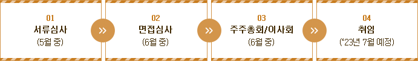

대표이사 모집
대한민국 선진장례문화의 선두주자인 The-K 예다함상조(주)에서
역량과 덕망을 겸비한 대표이사를 다음과 같이 모십니다.
자격요건
-
가.기본자격
상조업 및 보험업 전반에 대한 폭넓은 경험과 전문지식을 보유한 자로서
- 당사의 지속적인 발전에 공헌할 능력(대외 영업력 등)이 뚜렷한 자
- 탁월한 인품과 청렴성을 갖추고 특히 윤리경영을 잘 할 수 있는 자
- 미래지향적 비전 제시력, 창의력, 지도력 및 추진력을 고루 갖춘 자
- 한국교직원공제회 정관 제20조의2의 임원 결격사유에 해당하지 않는 자
- 나.우대사항 : 자산운용 또는 마케팅 분야에 전문성 및 성과를 갖춘 자
근로조건
-
가. 임기 : 취임일로부터 3년 이내
※취임 후 2년 경과시점에 경영성과에 따라 1년 계속근무 여부 결정)
- 나.보수 : 기본연봉(규정에 따름) + 성과급(경영평가 기준)
- 다.근무지 : The-K예다함상조(주) 본사(서울 마포구 소재)
- 라.기타 : 차량/차량기사 지원, 월 활동비 및 통신비 등 지원
모집기간
- 2023. 04. 24(월) ~ 05. 12(금) 18:00까지
지원방법
-
가.제출서류
1)지원서 1부(이력서, 사진포함) * 회사양식
2)자기소개서 1부 * 회사양식
3)직무수행계획서 1부 * 회사양식
4)개인정보 제공 동의서 1부 * 회사양식
5)최종학교 졸업증명서 1부
6)경력증명서 각 1부
7)공직자윤리위원회 취업승인서류 1부(해당자에 한함, 면접심사일 전 제출)
8)자격증 사본 각 1부(해당자에 한함)
※회사 양식은 당사 홈페이지 채용게시판(www.yedaham.co.kr)에서 다운로드 가능
-
나.제출방법 : 이메일 또는 우편접수
1)이메일 : recruit@thekyedaham.co.kr
2)우편 : 서울 마포구 마포대로 86 창강빌딩 14층 The-K예다함상조(주) 인사총무팀
※우편접수는 마감일 18시 도착분에 한함
전형방법 및 일정

- ※ 각 단계별 합격자에 한해, 개별 유선 통보(예정)
유의 사항
-
가.「공직자윤리법」제17조(퇴직공직자의 취업제한) 등에 해당하는 취업심사대상자의 경우 관할 공직자윤리위원회에
취업심사를 신청하고 취업승인서류를 면접심사일 전 제출(서류심사 합격자에 한함)
※미제출 시 면접응시가 제한될 수 있음. 단, 관할 공직자윤리위원회의 연기, 미개최 등의 불가피한 사유로 면접심사일
전 취업승인서류의 제출이 제한되는 경우 선임일 전까지 제출가능
- 나.지원서의 기재사항과 제출서류가 사실과 다를 경우 합격 또는 선임이 취소됨
- 다.최종합격자로 결정되었더라도 응시자격 또는 결격사유가 확인되는 경우 합격 또는 선임이 취소됨
- 라.전형절차와 일정 등은 변경될 수 있음
채용서류의 반환
-
가.「채용절차의 공정화에 관한 법률」제11조(채용서류의 반환 등)에 따라 선임 여부가 확정된 이후 지원자(선임 확정자
제외)가 채용서류의 반환을 청구하는 경우 확정일로부터 14일 이내에 반환. 단, 홈페이지 또는 전자우편으로 제출된
경우나 회사의 요구 없이 자발적으로 제출한 경우 제외
- 나.선임 여부가 확정된 날로부터 180일 이내에 채용서류 반환청구 가능. 단, 천재지변이나 그 밖에 회사에 책임 없는
사유로 채용서류가 멸실된 경우 제외
- 다.채용서류 반환청구 가능기간 경과 후, 타 법령 등에서 별도로 보관이 요구되지 않는 경우 「개인정보보호법」에 따라
파기
- 라.채용서류 반환 소요비용 회사부담